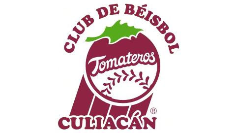
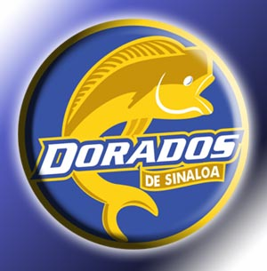

Los Tomateros de Culiacán son un equipo de béisbol mexicano perteneciente a la Liga Mexicana del Pacífico (LMP), con sede en la ciudad de Culiacán, Sinaloa, México. Cuenta con 10 campeonatos en su historia en la liga (segundo después de los Naranjeros de Hermosillo quienes cuentan con 16), y 2 campeonatos en Serie del Caribe. De este total de 12 campeonatos, 8 han sido de la mano del mánager Francisco "Paquín" Estrada.
Los Tomateros tienen su antecedente en los "Tacuarineros de Culiacán" de la vieja Liga de la Costa del Pacífico, quienes consiguieron 5 campeonatos en 13 temporadas.
Titulos de liga |
Liga de la costa |
Serie del caribe |
| 1966-67 | 1948-49 | 1996 |
| 1969-70 | 1949-50 | 2002 |
| 1977-78 | 1950-51 | |
| 1982-83 | 1951-52 | |
| 1984-85 | 1955-56 | |
| 1995-96 | ||
| 1996-97 | ||
| 2001-02 | ||
| 2003-04 | ||
| 2014-15 |
Culiacán, un lugar acostumbrado a festejar los hits y las carreras de los Tomateros de Culiacán, se convirtió abruptamente en el hogar de los Dorados. Fue el 9 de agosto del 2003 cuando el balompié de la Primera División 'A' de México hizo su aparición en territorio sinaloense. Cuando Eustaquio de Nicolás y Valente Aguirre anunciaron la creación de los Dorados, muy pocos, por no decir nadie, se atrevieron a respaldarlos.
Antes de iniciar su participación en el Torneo Apertura 2003 de la Primera División 'A' de México, la directiva sinaloense tenía prevista la consecución del ascenso hasta tres o cuatro años más tarde. Sin embargo, los triunfos no tardaron en conseguirse. La escuadra dirigida por Juan Carlos Chávez emergió con paso victorioso. Los Dorados accedieron a la gran final el 20 de diciembre del 2003, los sinaloenses alcanzaron su primer título al vencer con gol de oro, obra de Guadalupe Castañeda, a las Cobras de Ciudad Juárez. La historia no cambió mucho para el Clausura. El flamante campeón sinaloense se mantuvo en las primeras posiciones y volvió hasta la final. El Club León se impuso por dos a uno en el global y obligó a que se disputara una nueva serie entre ambos para definir cuál de los dos Ascendería a la Primera División de México. El primer partido terminó con un empate a dos goles en el Estadio León. En el segundo partido; en el minuto ochenta, Roberto Domínguez marcó el tanto que selló el ingreso a la Primera División de México
Derechos reservados AlexAyala©